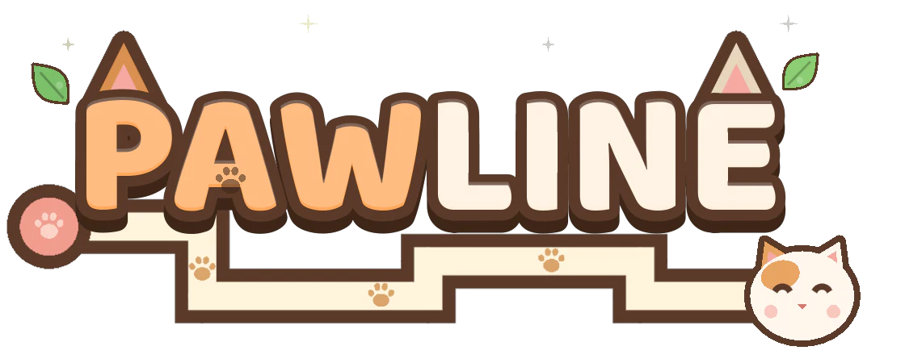
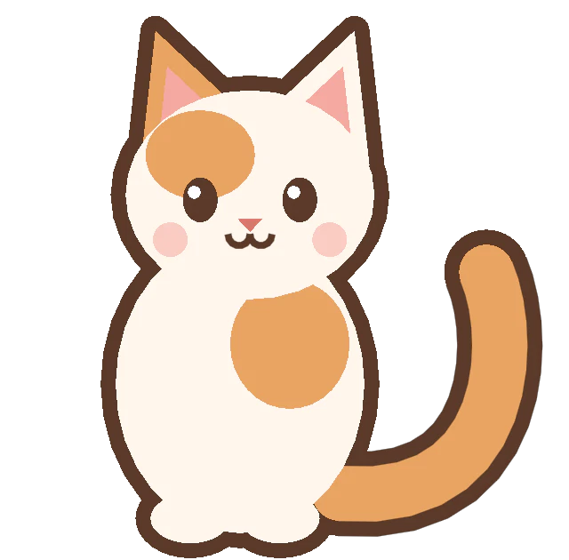
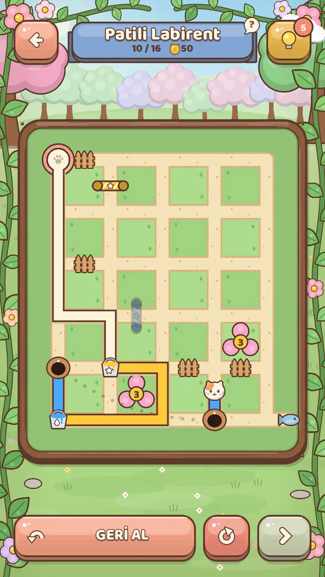
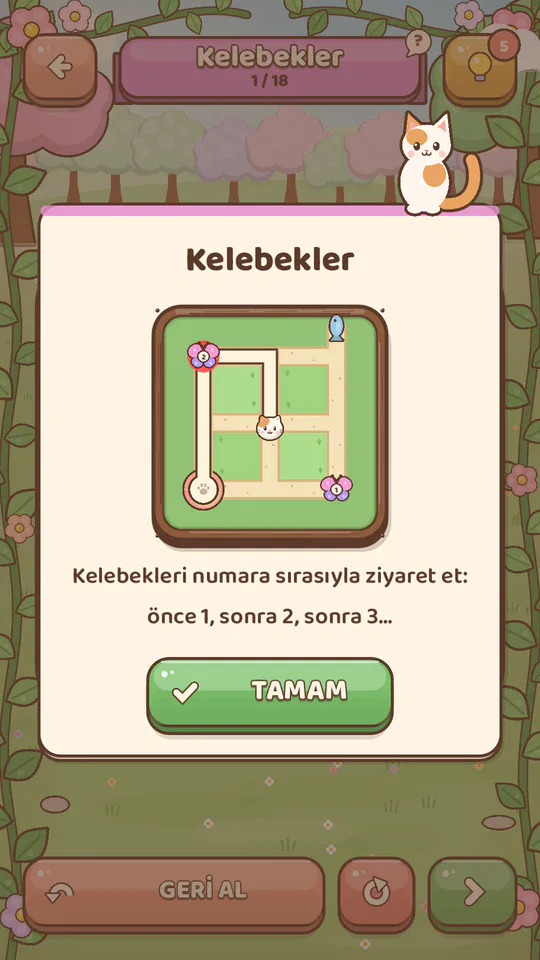
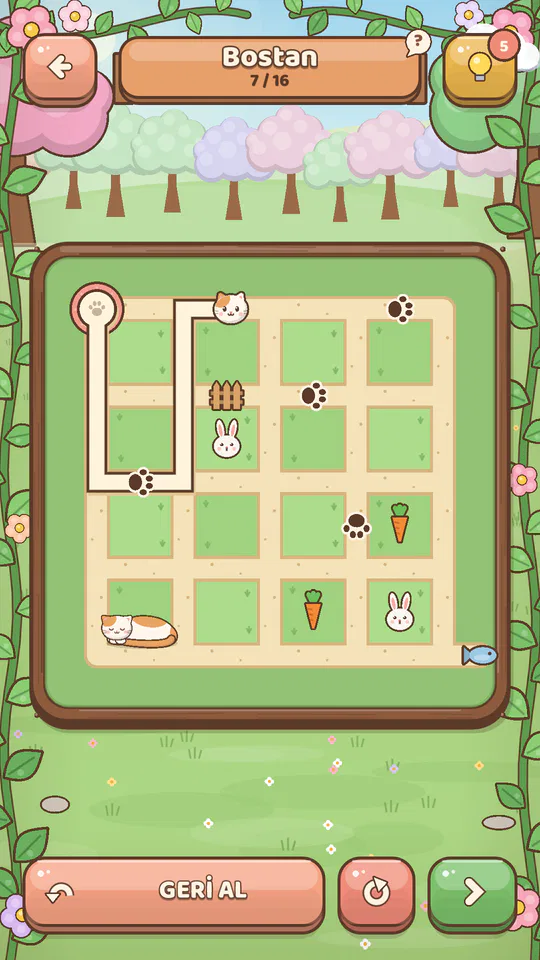
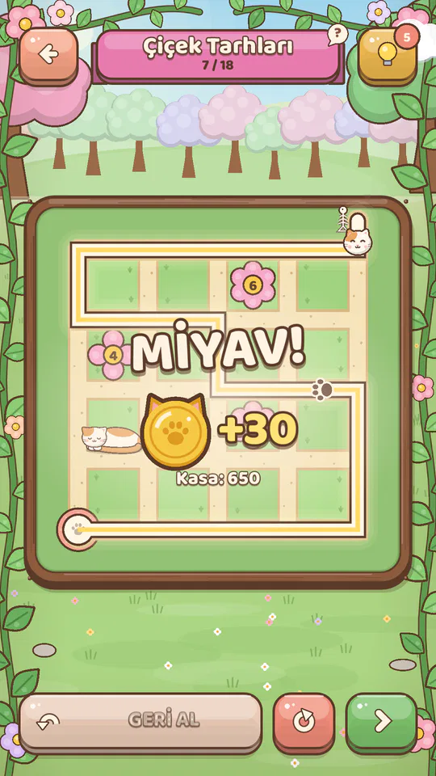
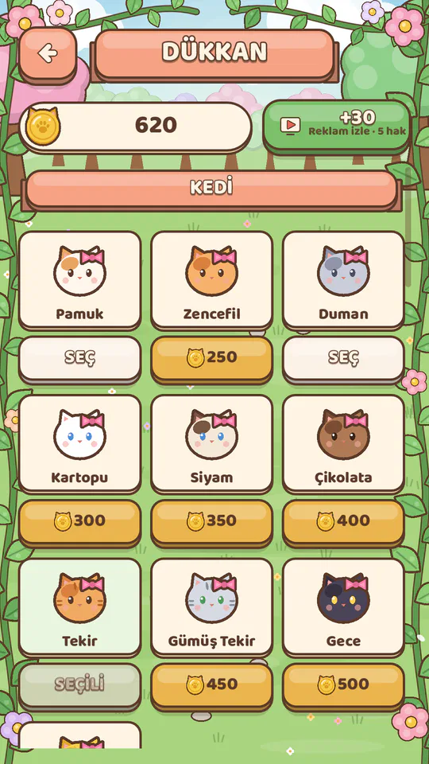
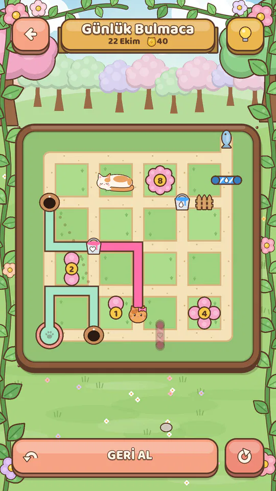
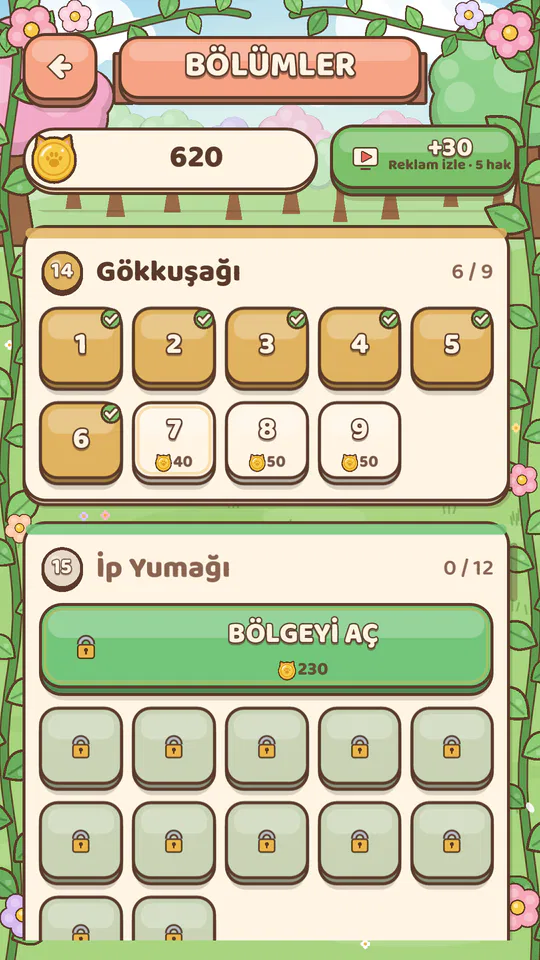

Çizgini çek, kediyi balığa ulaştır! Draw your line, lead the cat to the fish!
Kedi acıkmış, balık da bahçenin öbür ucunda. Parmağınla minderden balığa bir yol çiz, gerisini kedi halleder. Kulağa kolay geliyor, ama her bahçenin kendi kuralları var. The cat is hungry, and the fish is on the other side of the garden. Draw a path from the cushion to the fish and the cat will do the rest. Sounds easy, but every garden has its own rules.


Nasıl oynanır?How to play
Kurallar tek tek gelir; her yeni bahçe sana sevimli bir kartla yenisini anlatır. Rules arrive one at a time; each new garden introduces one with a cute card.
Çizgini çekDraw your line
Kedi minderinden başla, parmağını kaydır. Çizgi parmağının altında kalır.Start at the cat's cushion and slide your finger. The line stays right under it.
Kuralı keşfetDiscover the rule
Patiler, uyuyan kediler, çiçekler, boya kovaları, fare delikleri... Yanlış yol kırmızı yanıp söner ve sana ipucu verir.Paw prints, sleeping cats, flowers, paint buckets, mouse holes... A wrong path blinks red and gives you a clue.
Balığa ulaşReach the fish
Doğru yolu bulunca kedin koşup balığını afiyetle yer. Sen de kedi parası kazanırsın!Find the right path and your cat dashes off to enjoy its fish. You earn cat coins too!
Bahçeye bir göz atTake a peek
Her şey elle çizilmiş gibi: pastel bahçeler, tahta çitler, uykucu kediler.Pastel gardens, wooden fences and sleepy cats, all drawn with love.






İçinde neler var?What's inside
Kısa molalar için de uzun akşamlar için de.For a quick break or a long evening.
400+ bulmaca, 25 bahçe400+ puzzles, 25 gardens
Her bahçe minik bir tahtada başlar, yavaş yavaş zorlaşır.Each garden starts tiny and grows harder step by step.
Günlük bulmacaDaily puzzle
Her gün yeni bir bulmaca ve büyüyen bir seri.A fresh puzzle each day and a growing streak.
Sakin müzikCalm music
Bulmacanın başında düşünürken eşlik eden sakin bir müzik ve yumuşak sesler.Calm music and soft sounds to keep you company while you think.
Kedini süsleDress up your cat
Tüyler, şapkalar, çizgi renkleri, minderler ve balıklar.Fur colors, hats, line colors, cushions and fish.
İnternetsiz oynaPlay offline
Bulmacalar internet olmadan da çalışır.Puzzles work without an internet connection.
Kolaydan zoraGentle difficulty curve
İlk bahçeler ısınma turu. Sonlara doğru bir tahtanın başında dakikalarca düşüneceksin.The first gardens are a warm-up. Further in, some boards will keep you thinking for minutes.
Teste katılmak ister misin?Want to play it early?
Pawline şu anda Google Play'de kapalı testte. Google hesabının e-posta adresini bize yaz, seni test listesine ekleyelim ve indirme bağlantısını gönderelim. Pawline is in a closed test on Google Play. Send us the email address of your Google account and we'll add you to the tester list and send you the download link.
E-posta gönderSend an email